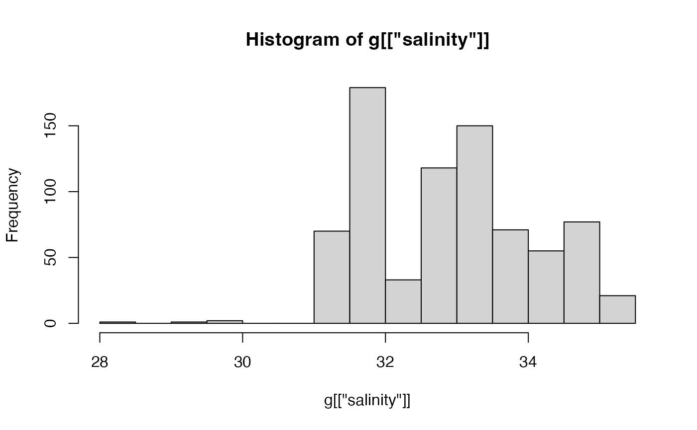

Retrieve something contained in a glider object, or something that can be computed from what is contained there.
# S4 method for glider
[[(x, i, j, ...)A glider object, i.e. one inheriting from glider.
Character value that names the item to be retrieved.
Optional character value specifying the data-stream to be used.
Optional additional information (ignored).
First, a check is done to see if the object's metadata contains an item
with name given by i. If this is true, then that value is returned.
Otherwise, the item is sought somewhere within the data slot.
The procedure is somewhat subtle, and depends on the data type.
For objects read by read.glider.slocum() ...
FIXME: write more here, but only when we handle the slocum data
in the form it has as of 2019; the code is 2 years old and the data file
format used in local laboratories seems to have changed, possibly twice,
in the meantime.
For objects of type seaexplorer, i.e. as read by
read.glider.seaexplorer.realtime() and
read.glider.seaexplorer.delayed(). the data slot
may contain multiple items. In some cases, there will be an item
named glider and another named payload1. In others,
the first of these may be missing. (Also, it seems likely that
the package will be updated to include multiple payloads, when
users start deploying such gliders.)
If j is not specified, then
i is sought first in payload1, with
glider being checked thereafter. For example, this means that a
thermometer within the payload will be preferred to one attached to
the body of the glider. This selection
process can be controlled by setting j to either "glider"
or "payload1". For example, both x[["temperature"]] and
x[["temperature","payload1"]] retrieve values from
the payload thermistor, while x[["temperature","glider"]] retrieves
values from the glider thermister. For clarity of code, it might make
sense to always specify j.
In addition to retrieving data stored in the object, \[\[ can also
return the following.
the full data slot, with e.g. x[["data"]]
the glider item in data slot, with e.g. x[["glider"]]
the payload1 item in data slot, with e.g. x[["payload1"]]
the Absolute Salinity is returned with e.g.
x[["SA"]]. This is computed with
gsw::gsw_SA_from_SP(), based on the water properties
stored in the object. (See also the item for Conservative Temperature)
the sigma-theta density anomaly calculated using
oce::swSigmaTheta() on the water properties stored in the object,
with e.g. x[["sigmaTheta"]]. This obeys the setting of the
equation of state, established with e.g. options(oceEOS="gsw") for the
TEOS-10/GSW variant or options(oceEOS="unesco") for the
older UNESCO variant.
the Conservative Temperature is returned with e.g.
x[["CT"]]. This is computed with
gsw::gsw_CT_from_t(), based on the water properties
stoed in the object. (See also the item for Absolute Salinity.)
the sigma0 density anomaly is returned with e.g.
x[["sigma0"]]. This is computed with
oce::swSigma0() based on the water properties
stored in the object.
Note that the computation depends on the setting of the equation of state,
set up with options(oceEOS="gsw") for the TEOS-10/GSW variant
or with options(oceEOS="unesco") for the older UNESCO variant.
the spiciness0 water property is returned with e.g.
x[["spiciness0"]]. This is computed with
gsw::gsw_spiciness0(), based on the water properties
stored in the object. (Note that this is the TEOS-10/GSW variant.)
glider object containing just the data for a particular yo,
e.g. x[["yo",1]] yields the first yo.
library(oceGlider)
directory <- system.file("extdata/seaexplorer/raw", package="oceGlider")
g <- read.glider.seaexplorer.delayed(directory)
hist(g[["salinity"]])
